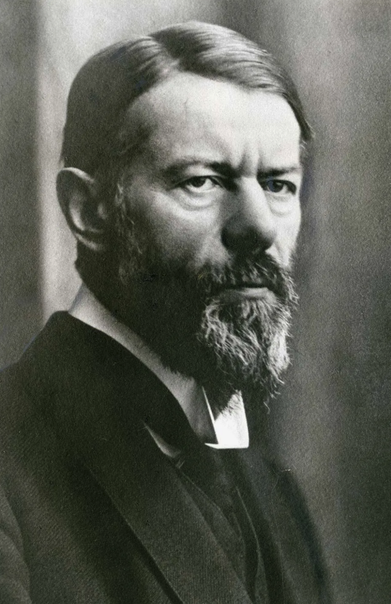
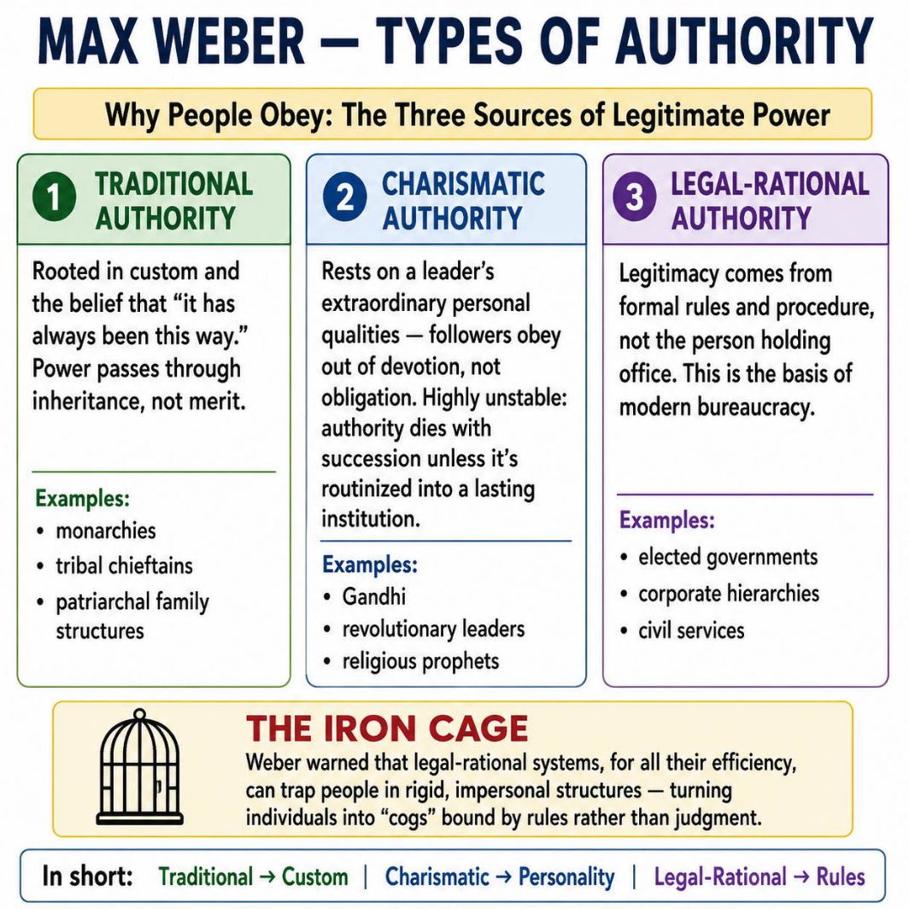

For the German sociologist Max Weber, political legitimacy concerns why people believe that a ruler or government has the right to exercise legitimate authority—and why they obey it.

Weber argued that political power cannot be understood simply in terms of force or coercion. Durable political authority depends, in important ways, on people's belief that the authority is legitimate.
His account appears in in his lecture "Politics as a Vocation" (1919).
1. Weber's three types of legitimate authority Weber distinguished three ideal types of legitimate authority. Each rests on a different basis for believing that someone has the right to rule.
1. Traditional authority Legitimacy through custom and inherited tradition People obey because they believe that established customs and inherited practices are rightful. The ruler's authority is justified by the continuity of tradition.
Examples:
hereditary monarchies,
dynastic rule,
traditional chieftaincies.
Steve Hanson argues that Putin built a traditional patrimonial state in Russia.
Underlying belief: “This is how we have always been governed.”
2. Charismatic authority Legitimacy through belief in an exceptional leader
People obey because they believe a leader possesses extraordinary qualities, heroic abilities, a special mission, or exceptional moral authority.
Examples:
revolutionary leaders,
prophetic figures,
leaders who mobilize followers around a national or political cause.
Steve Hanson argues that in a way the USSR was a charismatic state (in Weberian terms) promising and prophesizing utopian future.
Underlying belief:
“This person is extraordinary and deserves to lead.”
3. Legal-rational authority Legitimacy through impersonal rules and law
People obey because they believe that laws, procedures, and formally established offices confer the right to govern. Authority belongs to the office, not simply to the person occupying it.
Examples: elected governments, courts, civil services, and modern bureaucracies.
Underlying belief: “The rules and procedures authorize this person to exercise power.”
